Ressource éducative libre (REL) sur l'intégration de l'électronique aux espaces immersifs
Ce projet a été initié en 2022 par Thomas Ouellet Fredericks avec la collaboration de Guillaume Arseneault.
Sa réalisation a été rendue possible grâce à un financement de la fabrique REL.
Licence
Ressource éducative libre (REL) sur l'intégration de l'électronique aux espaces immersifs, sous la responsabilité de Thomas O Fredericks, est partagée sous la licence Attribution - Pas d’Utilisation Commerciale 4.0

REL vivante
Ce site Web est une ressource éducative libre vivante. C'est à dire qu'elle a été conçue pour grandir et évoluer de façon continue.
Conventions de documentation
Les noms de variables qui sont destinées à être créées par l'utilisateur doivent être précédés de mon ou ma pour les différencier des noms réservés du langange de programmation.
Exemples :
int maBrocheDel = 10;
void monTraiterMessage( microOscMessage monMessageOsc ) {
...
}
MicroOsc monMicroOsc;
Références
- SparkFun
- Arduino à l'école 2022 (PDF)
- Le blog d'Eskimon
- Arduino : premiers pas en informatique embarquée • Tutoriels • Zeste de Savoir
- SOUDER C'EST FACILE (PDF)
- The Illustrated Arduino de 16Hz (PDF)
Technologies utilisées pour la réalisation de cette ressource
- mdBook pour convertir les textes du format Markdown au format HTML.
- GitHub Actions pour automatiser le déploiement des fichiers sources au site tim-montmorency.com/rel-electro-immersif.
- Du JavaScript sur mesure pour ajouter automatiquement la description des figures sous celles-ci.
- GLightbox pour permettre l'intégration de la lecture des vidéos directement dans le site.
Le courant électrique
Le courant électrique est un déplacement d’électrons dans un milieu conducteur.
Pour que ces électrons se déplacent il faut créer une différence du nombre d'électrons entre les deux extrémités du circuit électrique. C'est ce qu'on appelle une différence de potentiel.
Alimentation
Pour créer cette différence de potentiel, on utilise une alimentation électrique qui peut prendre la forme d'une batterie, alimentation USB, panneau solaire, prise électrique , etc.

Une alimentation possède deux pôles. L'un positif (avec un potentiel haut) et l'autre négatif (avec un potentiel bas).

Boucle électrique
Pour circuler, le courant doit suivre une boucle entre les deux pôles de l'alimentation.

Principales grandeurs électriques
| Grandeur | Symbole | Unité | Analogie |
|---|---|---|---|
| Tension | U | Volts (V) | La pression qui génère la circulation des électrons |
| Intensité | I | Ampères (A) | La quantité d’électrons qui circule à un point |
| Résistance | R | Ohms (Ω) | Réduit la circulation des électrons (réduit la pression et la quantité) |
| Puissance | P | Watts (W) | La puissance résultant de la pression multipliée par la quantité |
Analogie de l'eau
Pression de l'eau ≈ tension électrique

Quantité d'eau ≈ intensité électrique

Étranglement de tuyau ≈ intensité électrique

Relations mathématiques entre les principales grandeurs électriques
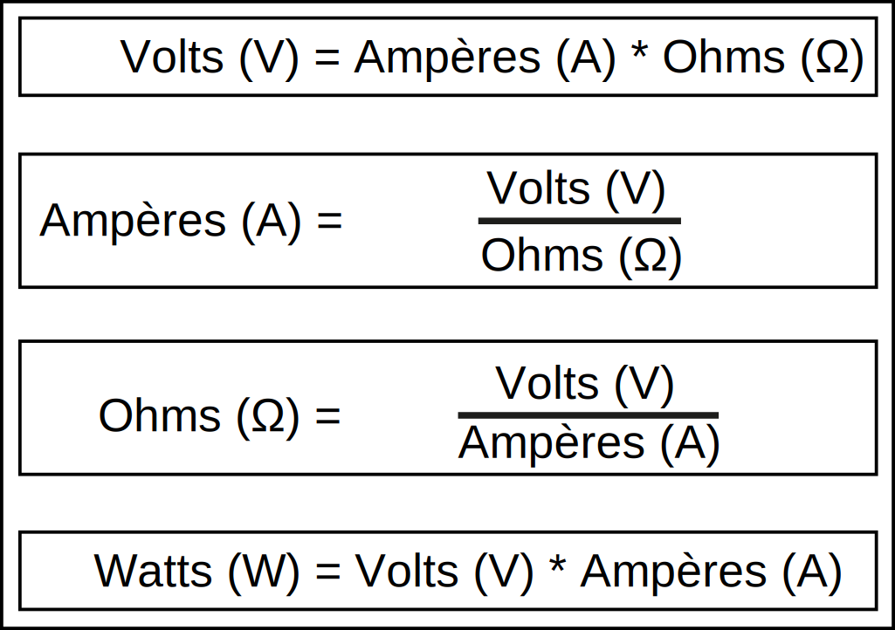
Exemples
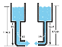
Schémas de circuit
Un schéma de circuit est une représentation schématique de la connectique d’un circuit électrique. Les composants électriques sont représentés en tant que symboles pour faciliter leur reproduction et leur identification. Ce qui est important est de représenter comment les éléments sont reliés entre eux et non leur disposition exacte dans l’espace.
Symboles d'alimentation
Un symbole qui regroupent les deux pôles


Deux symboles séparés qui représentent les deux pôles de la même alimentation


Platine d'expérimentation (breadboard)
Une platine d’expérimentation (breadboard en anglais) permet de réaliser des prototypes de circuits électroniques sans soudure et donc de pouvoir réutiliser les composants.

À gauche, dans l'image ci-haut, nous trouvons le circuit électrique pour allumer une lumière DEL à partir de la carte Arduino. Par contre, il est impossible de relier les composants sans faire de soudure. C’est pour cela que nous utilisons la platine d’expérimentation.
Connexions
Certains des trous de la platine d'expérimentation sont connectés entre eux. Ces connexions sont indiquées par des lignes dans l'illustration suivante.

- Tous les trous dans une rangée intérieure de 5 sont reliés entre eux.
- Les trous des colonnes extérieures sont reliés entre eux. Ils sont réservés à l'alimentation :
- Colonne rouge pour le pôle positif (+).
- Colonne bleue pour le pôle négatif (-).
Bien placer les composants sur la platine d'expérimentation
Les broches (pattes) des composants doivent être insérés dans des trous qui sont non reliés électriquement, c'est à dire isolée électriquement.
Dans la figure suivante :
- Le X indique une erreur où un composant dont les broches sont insérées dans des trous reliés électriquement.
- Les ✓ indiquent des bonnes connexions où chaque broche du composant est isolé électriquement.

Dans la figure suivante :
- Le X indique une erreur où un composant dont les broches sont insérées dans des trous reliés électriquement.
- Les ✓ indiquent des bonnes connexions où chaque broche du composant est isolé électriquement.

Se servir d'une carte Arduino pour alimenter une platine d'expérimentation
Pôles de la carte Arduino Nano
Sur certains modèles de carte Arduino Nano, le pôle positif (+) n’est malheureusement pas imprimé sur la carte. Cependant, on retrouve dans la documentation des broche que c’est la broche au dessus de l'étiquette «RST».
Le pôle négatif (-) est indiqué avec l'étiquette «GND» imprimée sur la carte.

Étape 1
Branchez un câble (orange ou rouge) dans la rangée de la broche du positif (+) de la carte Arduino. Ce câble transporte maintenant le positif (+).
Branchez un câble (brun ou noir) dans la rangée de la broche du négatif (-) de la carte Arduino. Ce câble transporte maintenant le négatif (-)
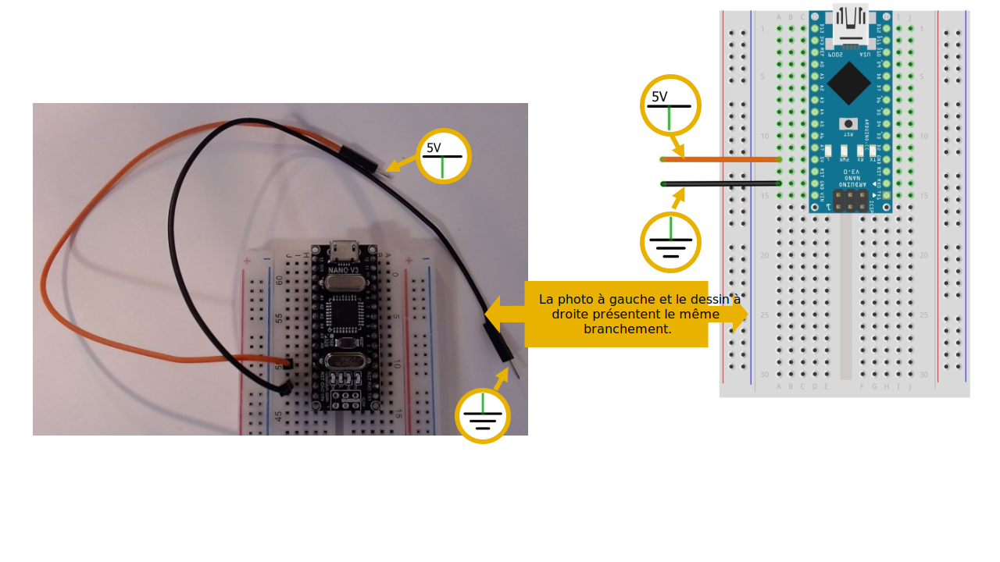
Étape 2
Brancher le câble qui transporte le positif (+) dans la colonne + rouge de la platine d’expérimentation.
Brancher le câble qui transporte le négatif (-) dans la conne – bleue de la platine d’expérimentation.

Étape 3
Reliez les deux autres colonnes de la patine d'expériementation.

Erreur fatale : court circuit
Ici le pôle positif (+) et le pôle négatif (-) sont connectés dans la même colonne d'alimentation! Cette erreur fatale risque d'endommager l'alimentation USB de l'ordinateur!

Erreur fatale : inverser les pôles + et -
Ici le pôle positif (+) et le pôle négatif (-) sont inversés! Cette erreur fatale risque de détruire tous les composants!

Quoi faire en cas d'erreur fatale

Diode électroluminescente (DEL)
La diode électroluminescente (DEL) est un actionneur qui transforme un signal électrique en lumière. Elle est appelée «LED» en anglais.
En utilisant divers matériaux semi-conducteurs, on fait varier la couleur de la lumière émise par la DEL. Il existe enfin une grande variété de formes de DEL.
Le courant électrique ne peut traverser la diode que dans le sens de l’anode vers la cathode.

La DEL a deux pôles
- Anode : pôle positif
- Cathode : pôle négatif
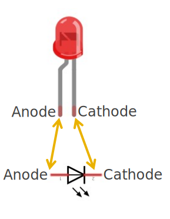
Limiter l'intensité du courant
Attention: il faut limiter l'intensité du courant qui traverse la DEL.
Pour une DEL rouge standard:
- La DEL crée une chute de tension (voltage drop) d’environ 2.1 Volts.
- L'intensité qui traverse la DEL doit être d'environ 0.02 Ampères (20 mA).
- L’utilisation d’une résistance est obligatoire pour réduire l'intensité et ne pas griller la DEL.
Résistance

Une résistance est un composant électrique dont la principale caractéristique est d'opposer une plus ou moins grande résistance mesurée en ohms (Ω) à la circulation du courant électrique.
Une résistance est un milieu peu conducteur; les électrons peinent à s’y déplacer. Leur énergie se dissipe alors en général sous forme de chaleur. C’est ce principe utilisé pour les bouilloires électriques ou les ampoules à filaments. La valeur de la résistance se mesure en ohms (Ω) et elle est déterminée par ses bandes de couleurs.

Calculer la valeur d’une résistance
Pour connaître la valeur en ohms (Ω) d'une résitance, il faut convertir le code couleurs des 2 ou 3 premiers anneaux pour ensuite multiplier par le code de l'anneau suivant. La tolérance, représentée par le dernier anneau correspond à l’imprécision de la valeur en ohms. Plus elle est petite, plus la résistance est de meilleur qualité.
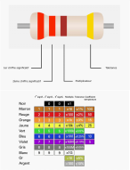
Exemple : rouge (2), rouge(2), brun (x10) = 22 * 10 = 220 Ω = 0.22 kΩ
Alimenter une DEL avec une batterie
Un schéma de circuit représente sous une forme plus précise les connexions des composants d’un circuit.
Le schéma et l’image ci-bas montrent tous les deux comment allumer une DEL avec une résistance et une batterie 9V.


Identification de l'alimentation

Identification de la résistance
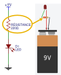
Identitfication de la DEL

Alimenter une DEL avec la platine d'expérimentation
Portez attention à la longueur des pattes de la DEL. Une patte est plus longue que l’autre. Une DEL ne s’allume que si elle est branchée dans le bon sens.

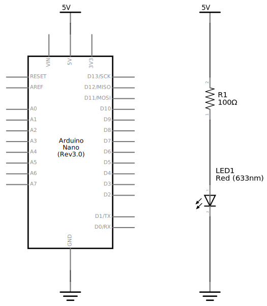

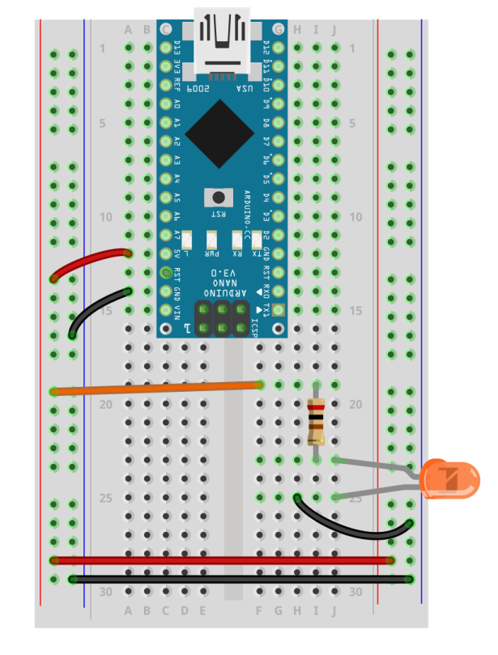
Micro-soudure
Équipement essentiel
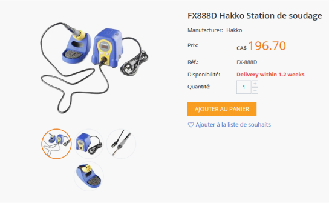
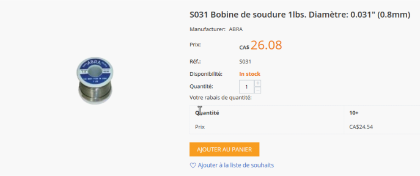


Tutoriels
- Tutoriel sous form de bande dessinée: SOUDER C'EST FACILE
- Vidéo d'introduction sur la soudure par KidzLab
Résumé de la technique de pointe
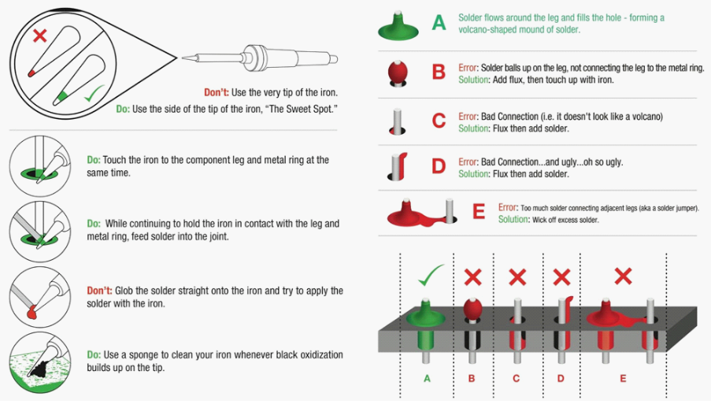
Multimètre
Mesure de continuité
Mesure de résistance
Modèles de cartes

Arduino Nano
Broches
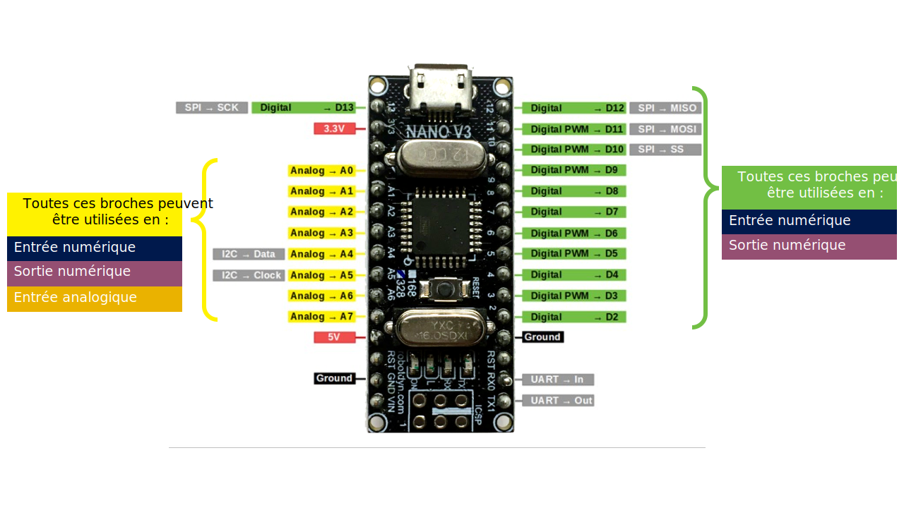
Installer le pilote de la carte Arduino Nano
Identifier le port de la carte
Identifier le port de la carte Arduino Nano
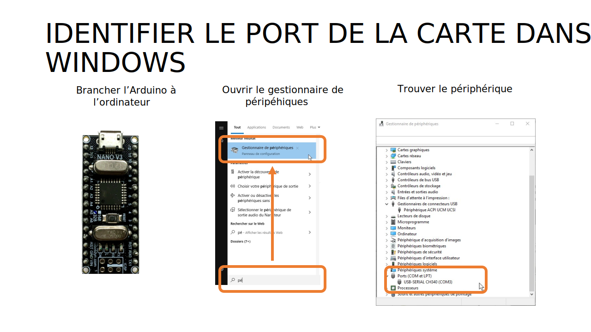
Configurer le logiciel Arduino pour la carte Arduino Nano

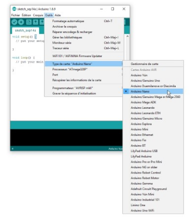

Blink: le code test universel
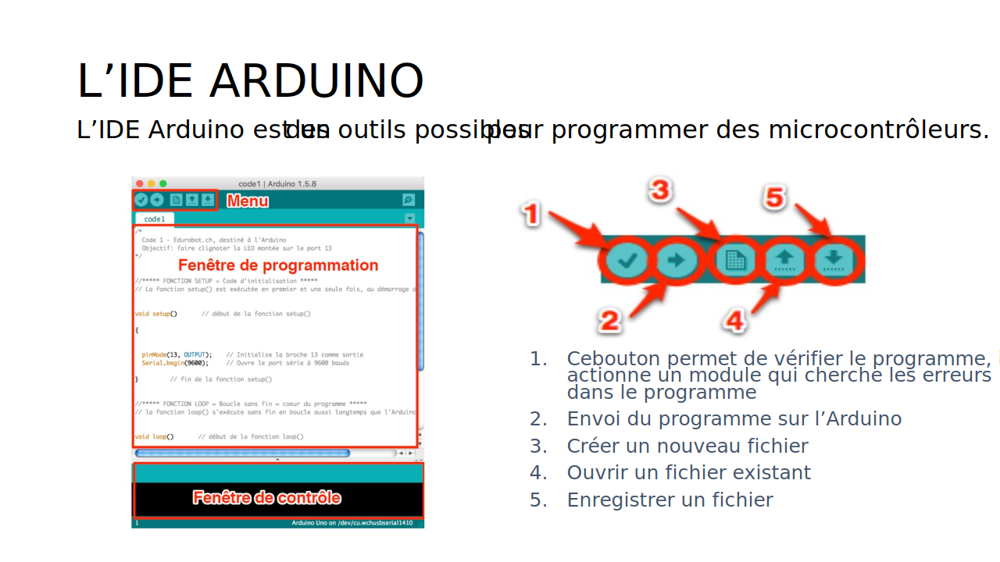
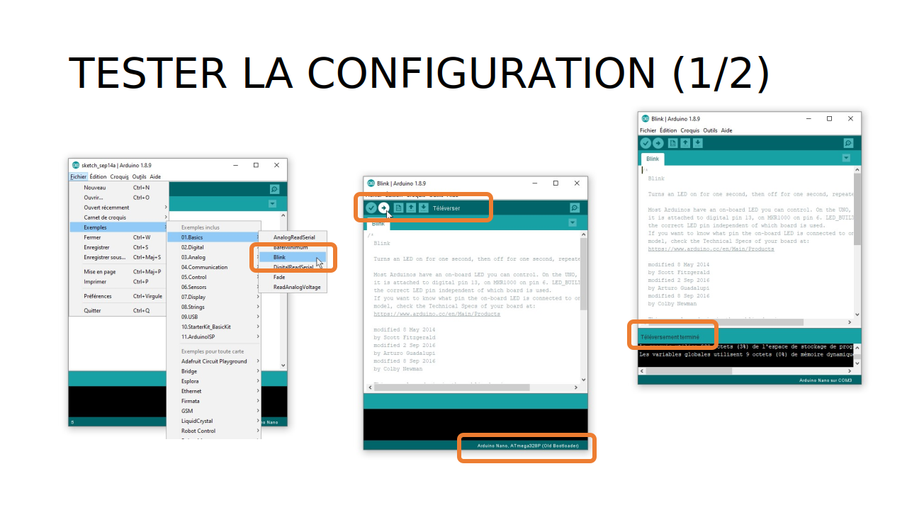
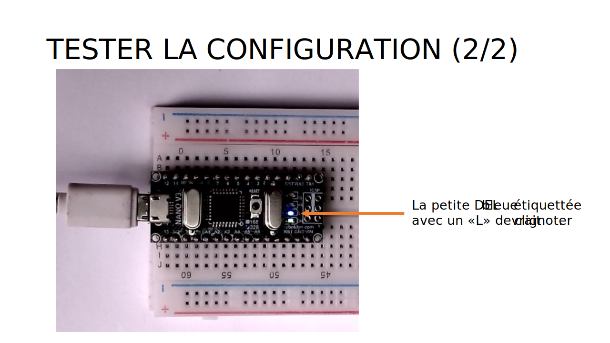
Le code Arduino
Références
- Référence Arduino sur Arduino.cc
- Arduino Programming Notebook de Bryan W Evans (2017) en version PDF
Code minimal
// VARIABLE GLOBALES
void setup() {
// CODE À ROULER AU DÉMARRAGE
}
void loop() {
// CODE À RÉPÉTER (LE PLUS RAPIDEMENT POSSIBLE)
}
Nous retrouvons deux fonctions dans le code minimal :
- setup()
- loop()
setup()
La fonction setup() est appelée une seule fois lorsque le programme commence. C'est pourquoi c'est dans cette fonction que l'on va écrire le code qui n'a besoin d'être exécuté qu’une seule fois. C'est une fonction d'initialisation. On y retrouvera la mise en place des différentes sorties et quelques autres réglages.
loop()
Une fois que l'on a initialisé le programme, il faut ensuite créer le «cœur» du programme, autrement dit le programme en lui même. C'est dans la fonction loop() que l’on va écrire le contenu du programme. Il faut savoir que cettefonction est appelée en permanence, c'est-à-dire qu'elle est exécutée une fois, puis lorsque son exécution est terminée, on la réexécute, encore et encore. On parle de boucle infinie!
Déroulement du programme
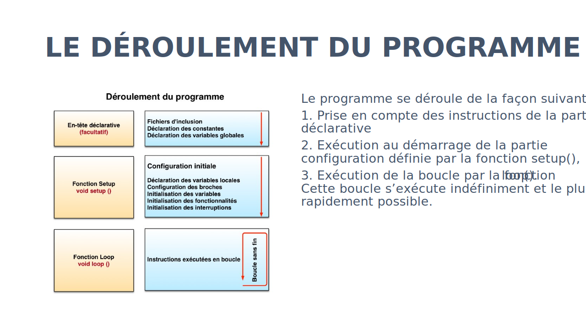
Les instructions

Variables de base

Analyse du code «Blink»
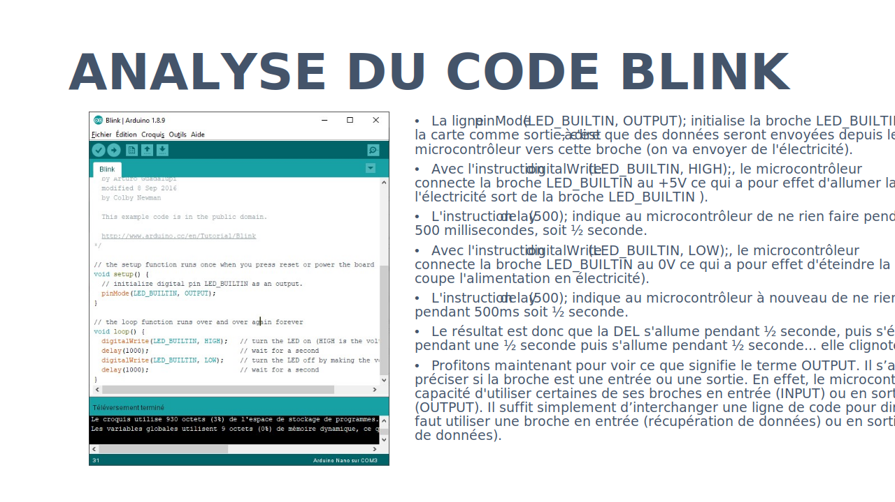
Ressources
Bien coder
FLOSS Manuals: Comment-Bien-Structurer-Son-Code / Arduino
Déboguer
Ouvrir et configurer le moniteur série
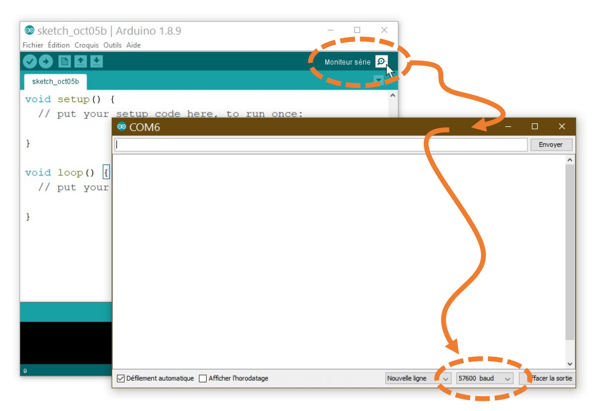
Fonctions pour déboguer avec Serial

Exemple d'envoi d'un message

Le code ASCII utilisé pour le débogage
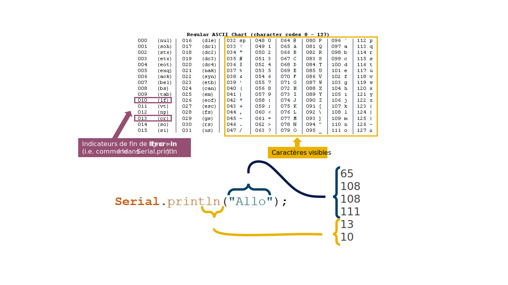
Exemple : envoyer continuellement la valeur d'une entrée numérique
int maBrocheEntreeNumerique = 4;
void setup() { // AU DÉMARRAGE
Serial.begin(57600); // CONFIGURER LA COMMUNICATION SÉRIE
pinMode( maBrocheEntreeNumerique , INPUT_PULLUP); // CONFIGURER LA BROCHE DE L'INTERRUPTEUR EN ENTRÉE
}
void loop() { // RÉPÉTER LE PLUS VITE POSSIBLE
int maValeurInterrupteur = digitalRead( maBrocheEntreeNumerique ); // LECTURE DE TENSION
Serial.print( maValeurInterrupteur ); // ENVOYER LA VALEUR
Serial.println(); // TERMINER LE MESSAGE
}
Mesurer le temps avec millis()
La fonction millis() permet de résoudre ce problème. Elle retourne le temps en millisecondes depuis le début de démarrage de votre Arduino.
Jusqu'à présent, vous avez déclaré des variables comme étant des int. Un int est un nombre de 16 bits, il contient des valeurs comprises entre -32 768 et 32 767. Si l'Arduino compte en millisecondes, vous manquerez d'espace en moins d'une minute.
Le type de données long peut contenir un nombre de 32 bits (entre -2 147 483 648 et 2 147 483 647). Comme vous ne pouvez pas exécuter le temps à rebours pour obtenir des nombres négatifs, nous utiliser le type unsigned long pour stocker le temps. Lorsqu'un type de données est appelé non signé, il est que positif. Cela vous permet de compter avec des valeurs encore plus grandes. Un unsigned long peut compter jusqu'à 4 294 967 295. C’est assez d’espace pour stocker le temps pendant près de 50 jours. En comparant le millis() actuel à une valeur spécifique, vous pouvez voir si un certain temps s'est écoulé.
Déclarer un variable pour récupérer le temps:
unsigned long tempsEcoule;
Mettre le temps dans la variable tempsEcoule:
tempsEcoule = millis();
Sortie numérique
Il est possible de régler la tension présente à la plupart des broches de la carte Arduino.
Cette tension peut être réglée à deux niveaux :
HIGH: règle la tension de sortie à 5V (pôle positif)LOW: règle la tension de sortie à 0V (pôle négatif/GND)
Pour régler la tension électrique de sortie d'une broche, nous utilisons la paire de fonctions suivantes :
- Configurer la broche
numeroBocheen mode sortie avecOUTPUT:
pinMode( numeroBoche , OUTPUT );
- Régler la tension avec l’une des commandes suivantes : Pour règler la tension de sortie à 5V (pôle positif)
digitalWrite( numeroBoche, HIGH );
Pour règler la tension de sortie à 0V (pôle négatif/GND)
digitalWrite( numeroBoche, LOW );
Debogage d'une sortie numérique
Dans le code suivant, nous déboguons la sortie numérique 13 :
int maBroche = 13;
int maValeur = LOW ; // VALEUR DÉSIRÉE DE LA SORTIE NUMÉRIQUE
unsigned long monChronoDepart = 0; // DEPART DE MON CHRONOMÈTRE
void setup() { // AU DÉMARRAGE
Serial.begin(115200); // CONFIGURER LA COMMUNICATION SÉRIE
pinMode( maBroche , OUTPUT); // CONFIGURER LA BROCHE EN SORTIE
}
void loop() { // RÉPÉTER LE PLUS VITE POSSIBLE
unsigned long monChronoEcoule = millis() - monChronoDepart; // TEMPS ÉCOULÉ DE MON CHRONOMÈTRE
unsigned long monChronoIntervalle = 250; // INTERVALLE DE TEMPS EN MILLISECONDES
if ( monChronoEcoule >= monChronoIntervalle ) { // SI 250 MS SE SONT ECOULEES...
monChronoDepart = millis(); // ...REDÉMARRER LE CHRONOMÈTRE...
// ALTERNER LA VALEUR DÉSIRÉE DE LA SORTIE NUMÉRIQUE
if ( maValeur == LOW ) maValeur = HIGH; // SI LOW, METTRE À HIGH
else maValeur = LOW; // SINON, METTRE À LOW
// APLLIQUER LA VALEUR DÉSIRÉE À LA SORTIE NUMÉRIQUE
digitalWrite( maBroche , maValeur );
Serial.print( "Envoi sur la broche " ); // ENVOYER UNE EN-TÊTE DE MESSAGE
Serial.print( maBroche ); // ENVOYER LE NUMÉRO DE LA BROCHE
Serial.print( " de la valeur (0=LOW, 1=HIGH) : " ); // ENVOYER UN SÉPARATEUR ENTRE LE NUMÉRO DE LA BROCHE ET SA VALEUR
Serial.print( maValeur ); // ENVOYER LA VALEUR
Serial.println(); // TERMINER LE MESSAGE
}
}

Contrôler une DEL
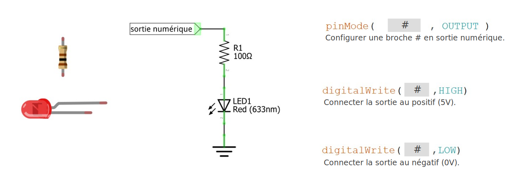
Segment de circuit
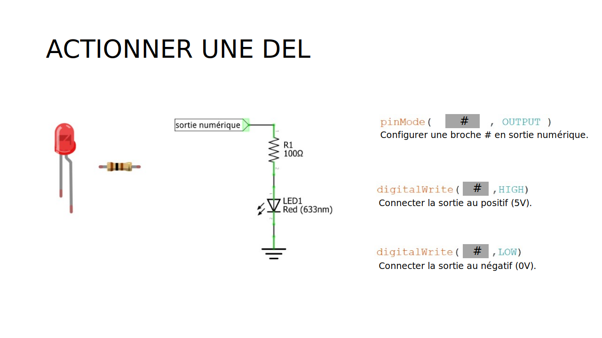
Circuit complet

Comparaison avec le circuit d'alimentation simple

Fonctions pertinentes
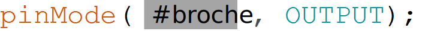

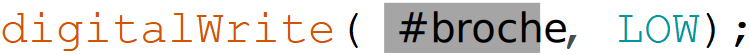
Fonction additionnelle

Code complet
const int sortieNumeriqueDel = 3;
void setup() {
pinMode(sortieNumeriqueDel, OUTPUT);
}
void loop() {
digitalWrite(sortieNumeriqueDel, HIGH);
delay(1000);
digitalWrite(sortieNumeriqueDel, LOW);
delay(1000);
}
Entrée numérique
Jusqu'à maintenant, nous avons traité des sorties (OUTPUT). Grâce à la commande digitalWrite() on peut contrôler la tension électrique d'un broche :
- haute tension :
HIGH - basse tension :
LOW
Nous avons utilisé jusqu’ici cette différence de potentiel pour allumer des DEL.
Si une broche est configurée en entrée (INPUT), nous pouvons effectuer la mesure numérique de la tension électrique. Cette mes
s’effectue sure une échelle à deux niveaux :
- haute tension :
HIGHprésence d’une tension plus grande que 3.5V - basse tension :
LOWprésence d’une tension sous 1.5 V
En fonction du signal reçu, le microcontrôleur pourra effectuer une tâche prévue (allumer la lumière lorsqu'un capteur de mouvement détecte une présence, par exemple).
Pour effectuer la mesure numérique de la tension électrique présente à une broche, nous utilisons la paire de fonctions suivantes :
- Configurer la broche
numeroBocheen mode entrée avecINPUT_PULLUP:
pinMode( numeroBoche , INPUT_PULLUP );
- Effectuer la mesure de la tension à la broche
numeroBocheet sauvegarder la valeur dans une variable :
int mesureDeTension;
mesureDeTension = digitalRead( numeroBoche );
Debogage d'une entrée numérique
Dans le code suivant, nous déboguons l'entrée numérique 2 :
int maBrocheEntreeNumerique = 2;
int maValeurPrecedente; // VALEUR PRÉCÉDENTE DE L'ENTRÉE NUMERIQUE
unsigned long monChronoDepart = 0; // DEPART DE MON CHRONOMÈTRE
void setup() { // AU DÉMARRAGE
Serial.begin(115200); // CONFIGURER LA COMMUNICATION SÉRIE
pinMode( maBrocheEntreeNumerique , INPUT_PULLUP); // CONFIGURER LA BROCHE DE L'ENTRÉE NUMERIQUE EN ENTRÉE
}
void loop() { // RÉPÉTER LE PLUS VITE POSSIBLE
unsigned long monChronoEcoule = millis() - monChronoDepart; // TEMPS ÉCOULÉ DE MON CHRONOMÈTRE
unsigned long monChronoIntervalle = 20; // INTERVALLE DE TEMPS EN MILLISECONDES
if ( monChronoEcoule >= monChronoIntervalle ) { // SI 20 MS SE SONT ECOULEES...
monChronoDepart = millis(); // ...REDÉMARRER LE CHRONOMÈTRE...
int maNouvelleValeur = digitalRead( maBrocheEntreeNumerique ); // LECTURE DE TENSION
if ( maNouvelleValeur != maValeurPrecedente ) { // SI LA NOUVELLE VALEUR EST DIFFERENTE DE LA PRÉCÉDENTE
Serial.print( "Valeur numerique de la broche " ); // ENVOYER UNE EN-TÊTE DE MESSAGE
Serial.print( maBrocheEntreeNumerique ); // ENVOYER LE NUMÉRO DE LA BROCHE
Serial.print( " : " ); // ENVOYER UN SÉPARATEUR ENTRE LE NUMÉRO DE LA BROCHE ET SA VALEUR
Serial.print( maNouvelleValeur ); // ENVOYER LA VALEUR
Serial.println(); // TERMINER LE MESSAGE
}
maValeurPrecedente = maNouvelleValeur; // METTRE EN MÉMOIRE LA NOUVELLE VALEUR
}
}

Interrupteur
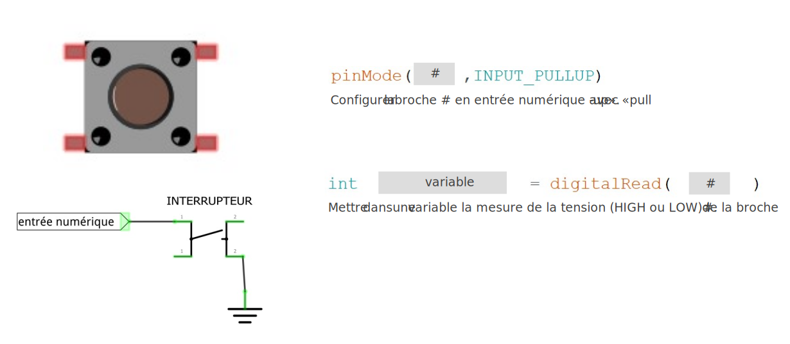

Bouton poussoir


Bouton d'arcade
Référence du produit
Microsoudure du bouton


Une entrée numérique contrôlant un sortie numérique
Allumer ou éteindre une DEL à partir d'un interrupteur
int brocheDel = 3;
int brocheInterrupteur = 12;
void setup() {
// put your setup code here, to run once:
pinMode( brocheDel , OUTPUT);
pinMode( brocheInterrupteur , INPUT_PULLUP);
}
void loop() {
// put your main code here, to run repeatedly:
int mesureDeTension = digitalRead( brocheInterrupteur);
if ( mesureDeTension == LOW ) {
digitalWrite( brocheDel, HIGH);
} else {
digitalWrite( brocheDel, LOW);
}
}
Contrôler le clignotement d'une DEL à partir d'un interrupteur
int brocheDel = 3;
int brocheInterrupteur = 12;
void setup() {
// put your setup code here, to run once:
pinMode( brocheDel , OUTPUT);
pinMode( brocheInterrupteur , INPUT_PULLUP);
}
void loop() {
// put your main code here, to run repeatedly:
int mesureDeTension = digitalRead( brocheInterrupteur);
if ( mesureDeTension == LOW ) {
digitalWrite( brocheDel, HIGH);
delay(250);
digitalWrite( brocheDel, LOW);
delay(250);
} else {
digitalWrite( brocheDel, LOW);
}
}
Intervalle de temps
Chronométer un intervalle de temps avec millis()
Créer une variable globale pour mettre en mémoire le temps de départ du chronomètre :
unsigned long monChronoDepart = 0; // DEPART DE MON CHRONOMÈTRE
Pour calculer le temps écoulé nous utilisons le code suivant:
unsigned long monChronoEcoule = millis() - monChronoDepart; // TEMPS ÉCOULÉ DE MON CHRONOMÈTRE
Nous pouvons exécuter du code si le temps écoulé dépasse un intervalle de temps (20 millisecondes dans cet exemple):
unsigned long monChronoIntervalle = 20; // INTERVALLE DE TEMPS EN MILLISECONDES
if ( monChronoEcoule >= monChronoIntervalle ) { // SI LE TEMPS ÉCOULÉ DÉPASSE L'INTERVALLE...
// ...FAIRE QQCH
}
Nous pouvons redémarrer le chronomètres avec le code suivant:
monChronoDepart = millis(); // REDÉMARRER LE CHRONOMÈTRE
Exécuter de façon cyclique
Nous pouvons combiner le deux extraits de code précédents pour exécuter du code ET redémarrer le chronomètre de façon cyclique. Dans l'extrait suivant, le code entre les { } est exécuté à chaque 20 millisecondes:
unsigned long monChronoEcoule = millis() - monChronoDepart; // TEMPS ÉCOULÉ DE MON CHRONOMÈTRE
unsigned long monChronoIntervalle = 20; // INTERVALLE DE TEMPS EN MILLISECONDES
if ( monChronoEcoule >= monChronoIntervalle ) { // SI LE TEMPS ÉCOULÉ DÉPASSE L'INTERVALLE...
monChronoDepart = millis(); // ...REDÉMARRER LE CHRONOMÈTRE...
// ...FAIRE QQCH
}
Exemple : envoyer la valeur d'une entrée numérique à chaque 20 millisecondes
int maBrocheEntreeNumerique = 4;
unsigned long monChronoDepart = 0;
void setup() { // AU DÉMARRAGE
Serial.begin(57600); // CONFIGURER LA COMMUNICATION SÉRIE
pinMode( maBrocheEntreeNumerique , INPUT_PULLUP); // CONFIGURER LA BROCHE DE L'INTERRUPTEUR EN ENTRÉE
}
void loop() { // RÉPÉTER LE PLUS VITE POSSIBLE
unsigned long monChronoEcoule = millis() - monChronoDepart; // TEMPS ÉCOULÉ DE MON CHRONOMÈTRE
unsigned long monChronoIntervalle = 20; // INTERVALLE DE TEMPS EN MILLISECONDES
if ( monChronoEcoule >= monChronoIntervalle ) { // SI LE TEMPS ÉCOULÉ DÉPASSE L'INTERVALLE...
monChronoDepart = millis(); // ...REDÉMARRER LE CHRONOMÈTRE...
int maValeurInterrupteur = digitalRead( maBrocheEntreeNumerique ); // LECTURE DE TENSION
Serial.print( maValeurInterrupteur ); // ENVOYER LA VALEUR
Serial.println(); // TERMINER LE MESSAGE
}
}
Détecter un changement de valeur
Organigramme pour l'envoi de la valeur d'une entrée numérique seulement si elle change
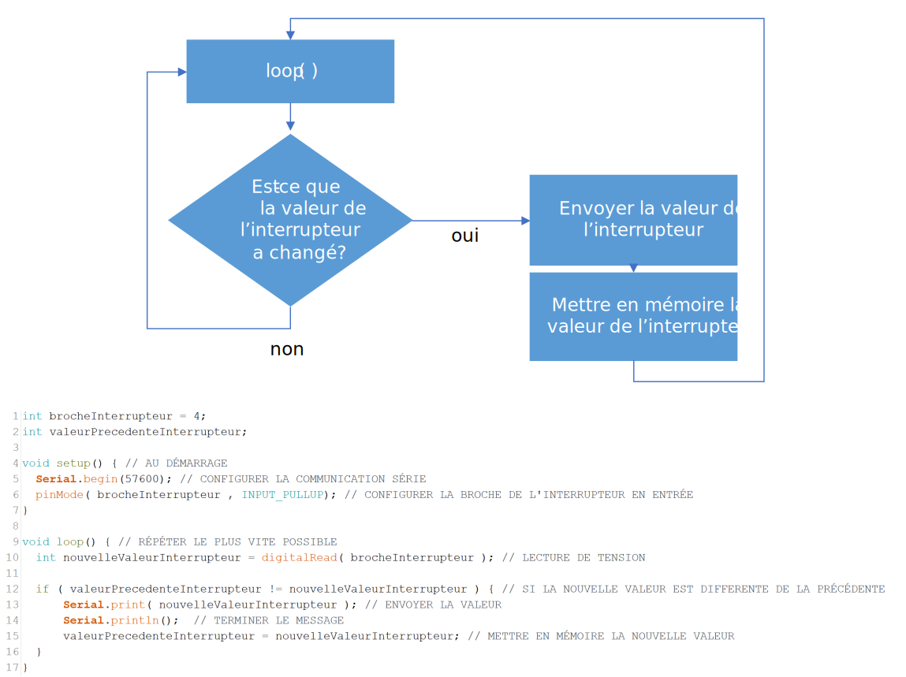
Extraits de code pertinents
Pour détecter un changement de valeur, il faut :
- Créer un variable pour se souvenir de la valeur précédente:
int maValeurPrecedente; // VALEUR PRÉCÉDENTE DE L'ENTRÉE NUMÉRIQUE
- Aller chercher la nouvelle valeur.
- Comparer la nouvelle valeur avec la précédente:
if ( maNouvelleValeur != maValeurPrecedente ) { // SI LA NOUVELLE VALEUR EST DIFFERENTE DE LA PRÉCÉDENTE
// FAIRE QQCH
}
- Mettre en mémoire la nouvelle valeur:
maValeurPrecedente = maNouvelleValeur; // METTRE EN MÉMOIRE LA NOUVELLE VALEUR
Exemple : envoyer la valeur d'une entrée numérique seulement si elle change
int maBrocheEntreeNumerique = 4;
int maValeurPrecedente; // VALEUR PRÉCÉDENTE DE L'ENTRÉE NUMÉRIQUE
void setup() { // AU DÉMARRAGE
Serial.begin(57600); // CONFIGURER LA COMMUNICATION SÉRIE
pinMode( maBrocheEntreeNumerique , INPUT_PULLUP); // CONFIGURER LA BROCHE DE L'INTERRUPTEUR EN ENTRÉE
}
void loop() { // RÉPÉTER LE PLUS VITE POSSIBLE
int maNouvelleValeur = digitalRead( maBrocheEntreeNumerique ); // LECTURE DE TENSION
if ( maNouvelleValeur != maValeurPrecedente ) { // SI LA NOUVELLE VALEUR EST DIFFERENTE DE LA PRÉCÉDENTE
Serial.print( maNouvelleValeur ); // ENVOYER LA VALEUR
Serial.println(); // TERMINER LE MESSAGE
}
maValeurPrecedente = maNouvelleValeur; // METTRE EN MÉMOIRE LA NOUVELLE VALEUR
}
Envoi optimal de valeur
Le code suivant envoie la valeur seulement si elle change et au maximum à chaque 20 millisecondes:
int maBrocheEntreeNumerique = 4;
int maValeurPrecedente; // VALEUR PRÉCÉDENTE DE L'ENTRÉE NUMÉRIQUE
unsigned long monChronoDepart = 0; // DEPART DE MON CHRONOMÈTRE
void setup() { // AU DÉMARRAGE
Serial.begin(57600); // CONFIGURER LA COMMUNICATION SÉRIE
pinMode( maBrocheEntreeNumerique , INPUT_PULLUP); // CONFIGURER LA BROCHE DE L'INTERRUPTEUR EN ENTRÉE
}
void loop() { // RÉPÉTER LE PLUS VITE POSSIBLE
unsigned long monChronoEcoule = millis() - monChronoDepart; // TEMPS ÉCOULÉ DE MON CHRONOMÈTRE
unsigned long monChronoIntervalle = 20; // INTERVALLE DE TEMPS EN MILLISECONDES
if ( monChronoEcoule >= monChronoIntervalle ) { // SI 20 MS SE SONT ECOULEES...
monChronoDepart = millis(); // ...REDÉMARRER LE CHRONOMÈTRE...
int maNouvelleValeur = digitalRead( maBrocheEntreeNumerique ); // LECTURE DE TENSION
if ( maNouvelleValeur != maValeurPrecedente ) { // SI LA NOUVELLE VALEUR EST DIFFERENTE DE LA PRÉCÉDENTE
Serial.print( maNouvelleValeur ); // ENVOYER LA VALEUR
Serial.println(); // TERMINER LE MESSAGE
}
maValeurPrecedente = maNouvelleValeur; // METTRE EN MÉMOIRE LA NOUVELLE VALEUR
}
}
Entrée analogique

Pour effectuer la mesure analogique de la tension électrique présente à une broche, nous utilisons la paire de fonctions suivantes :
- Configurer la broche
maBrocheAnalogiqueen mode entrée avecINPUT:
pinMode( maBrocheAnalogique , INPUT );
- Effectuer la lecture de la broche
maBrocheAnalogiqueavecanalogRead():
int maLectureAnalogique = analogRead( maBrocheAnalogique );
La fonction analogRead() mesure une tension entre 0V et 5V avec une résolution de 1024 seuils.
La valeur retournée par analogRead() est toujours entre 0 et 1023.
Debogage d'une entrée analogique
Dans le code suivant, nous déboguons l'entrée analogique A1 :
int maBrocheEntreeAnalogique = A1;
int maValeurPrecedente; // VALEUR PRÉCÉDENTE DE L'ENTRÉE ANALOGIQUE
unsigned long monChronoDepart = 0; // DEPART DE MON CHRONOMÈTRE
void setup() { // AU DÉMARRAGE
Serial.begin(115200); // CONFIGURER LA COMMUNICATION SÉRIE
pinMode( maBrocheEntreeAnalogique , INPUT); // CONFIGURER LA BROCHE DE L'ENTRÉE ANALOGIQUE EN ENTRÉE
}
void loop() { // RÉPÉTER LE PLUS VITE POSSIBLE
unsigned long monChronoEcoule = millis() - monChronoDepart; // TEMPS ÉCOULÉ DE MON CHRONOMÈTRE
unsigned long monChronoIntervalle = 20; // INTERVALLE DE TEMPS EN MILLISECONDES
if ( monChronoEcoule >= monChronoIntervalle ) { // SI 20 MS SE SONT ECOULEES...
monChronoDepart = millis(); // ...REDÉMARRER LE CHRONOMÈTRE...
int maNouvelleValeur = analogRead( maBrocheEntreeAnalogique ); // LECTURE DE TENSION
if ( maNouvelleValeur != maValeurPrecedente ) { // SI LA NOUVELLE VALEUR EST DIFFERENTE DE LA PRÉCÉDENTE
Serial.print( "Valeur analogique : " ); // ENVOYER UNE EN-TÊTE DE MESSAGE
Serial.print( maNouvelleValeur ); // ENVOYER LA VALEUR
Serial.println(); // TERMINER LE MESSAGE
}
maValeurPrecedente = maNouvelleValeur; // METTRE EN MÉMOIRE LA NOUVELLE VALEUR
}
}

Potentiomètre
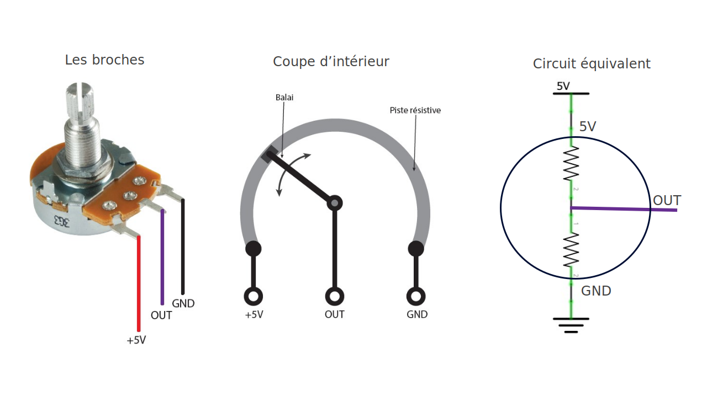
Connexion
Connectez le OUT du potentiomètre à une entrée analogique de l'Arduino.
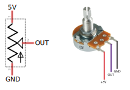
Microsoudure du potentiomètre


Photorésistance

Connexion avec un diviseur de tension
La photorésistance nécessite un circuit de diviseur de tension pour être connectée à l'Arduino. Connectez le OUT à une entrée analogique de l'Arduino.
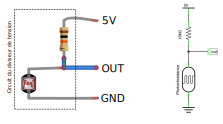
Microsoudure de la photorésistance
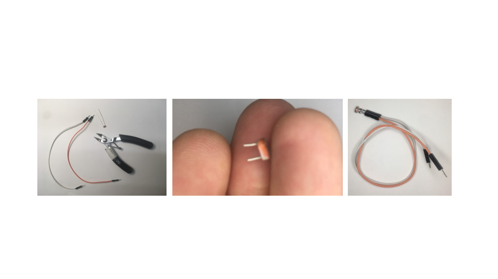
Une entrée analogique contrôlant des sorties de type numérique et analogique
Cours pour débuter sur Arduino
Open Sound Control (OSC)
L'Open Sound Control (OSC) est un protocole de communication inter-applications. Contrairement à ce qu'indique son nom, il ne concerne pas uniquement le son, mais offre un système d'organisation générique mais uniformisé de l'information pertinent au contrôle de n'importe quel système, multimédia ou pas. L'OSC a été développé à UC Berkeley Center for New Music and Audio Technology (CNMAT).
Pourquoi l'OSC?
La plupart des protocoles (COBS, JSON, FUDI, etc.) permettent une trop grande latitude dans la manière d'organiser les données, et s'appuient donc sur des architectures personnalisées spécifiques à chaque développeur. L'OSC impose une structure particulière de l'information que toutes les applications doivent supporter ce qui rend toute communication plus universelle : tout le monde parle la même langue!
L'OSC fournit également une vérification (primitive) des erreurs de transmission, ce qui est très important lorsque l'on travaille avec flux susceptibles au bruit!
Client et serveur
- Une application qui envoie de l'OSC est un client OSC.
- Une application qui reçoit de l'OSC est un serveur OSC.
- Habituellement, toutes les applications qui supportent l'OSC sont client OSC et serveur OSC (elles peuvent donc supporter la réception et l'envoi de messages OSC).
Unité de transmission
- L'unité de transmission de l'OSC est le message ou le bundle. Un bundle contient un ou plusieurs messages et un timetag.
- L'OSC est unidirectionnel et n'offre pas d'accusé de réception (on ne sait pas si le destinataire a reçu le message).
Paquetage
L'OSC ne définit pas la mise en paquet des messages.
Les deux types de paquets les plus communs sont:
- UDP (le mode par défaut) pour la communication par réseau ou interne de l'ordinateur
- SLIP (souvent nommé OSC SLIP) pour la communication par série (USB) avec des microcontrôleurs plus vieux
Par UDP
De façon générale, l'OSC est envoyé sur un réseau par UDP.
Pour envoyer un message, il faut spécifier l'adresse UDP du destinataire. Cette adresse se compose de deux parties:
- IP de la machine adressée.
- Port du client OSC.
Pour recevoir un message , il faut simplement spécifier le port de réception.
Par SLIP
Le SLIP ne permet pas d'adresser les messages à des destinataires spécifiques. Seule l'application qui est connectée au port série peut envoyer et recevoir des messages (qu'elle peut relayer par la suite par UDP si nécessaire).
Exemples d'architectures
Un client sur une machine -> un serveur sur une autre machine

Une machine <-> une autre machine

Un client -> un serveur sur la même machine
L'architecture suivante permet d'envoyer un message entre deux applications différentes sur la même machine (ou à l'intérieur de la même application). L'adresse IP 127.0.0.1 veut dire «la machine elle-même».

Composition d'un bundle OSC
Un bundle OSC contient plusieurs messages OSC. Il sert surtout à s'assurer que plusieurs messages arrivent simultanément au destinataire.
Composition d'un message OSC
Un message OSC est composé des éléments suivants:
- une adresse
- un ou plusieurs arguments
Adresse
L'adresse indique quel est le paramètre que l'on veut modifier. Elle peut être composée de n'importe quelle lettre et chiffre. Par contre, voici quelques recommandations à suivre lorsque vous concevez votre propre serveur OSC:
- Une adresse doit toujours commencer par
/ - Chaque
/subdivise l'adresse en hiérarchie symbolique. Plus une subdivision se trouve au début, plus est elle haute dans hiérarchie. Prenons comme exemple/A/B:AenglobeBetBfait partie deA. - Tous les espaces doivent être remplacés par des
_
Quelques exemples:
/application/fenetre/bouton
/torse/bras/main/doigt/index
/renoise/pattern_name
Arguments
Chaque argument possède un type. Il existe quatre types de base :
- int : nombre entier à 32 bit.
- float : nombre à virgule à 32 bit.
- string : chaîne de caractères.
- blob : un tableau d'octets (byte).
Un message OSC peut mélanger plusieurs types d'arguments différents et peut contenir n'importe quel nombre d'arguments.
Quelques exemples:
/application/fenetre/bouton 1
/torse/bras/main/doigt/index 0.324
/renoise/pattern_name intro 43
Voici quelques recommandations à suivre lorsque vous concevez votre propre serveur OSC:
- Essayez de réduire le nombre d'arguments au profit d'un adressage plus complet. Cela respecte mieux la hiérarchie de l'adressage et plusieurs serveurs OSC ne supportent qu'un seul argument à la fois. Par exemple, utilisez
/piste/0/vol 1.a un seul argument plutôt que/piste/vol 0 1.à deux arguments. - Utilisez autant que possible des nombres réels normalisées entre
0.et1.pour plus de compatibilité.
Annexe d'applications supportant l'OSC
- https://sensors2.org/osc/
MicroOsc
MicroOsc est une bibliothèque pour Arduino permettant à la plaquette de communiquer en OSC par SLIP ou UDP.
Installation


Documentation
La documentation (en anglais) se trouve sur le GitHub de la bibliothèque MicroOsc.
OSC SLIP
Prenons comme exemple le circuit suivant

Code OSC SLIP avec MicroOsc
// MicroOscSlip_demo
// by Thomas O Fredericks
// 2022-10-26
// HARDWARE REQUIREMENTS
// ==================
// Potentiometer connected to analog pin A0
// Photocell connected to analog pin A1
// Switch connected to pin 2
// LED connected to pin 3
// REQUIRED LIBRARIES
// ==================
// MicroOsc
// REQUIRED CONFIGURATION
// ======================
// Set Serial baud to 115200
#include <MicroOscSlip.h>
// The number 64 between the < > below is the maximum number of bytes reserved for incomming messages.
// Outgoing messages are written directly to the output and do not need more reserved bytes.
MicroOscSlip<64> myMicroOsc(&Serial);
unsigned long myChronoStart = 0;
const int myPotPin = A0;
int myPotPreviousValue;
const int myPhotoPin = A1;
int myPhotoPreviousValue;
const int myButtonPin = 2;
int myButtonPreviousValue;
const int myLedPin = 3;
void setup() {
// INITIATE SERIAL COMMUNICATION
Serial.begin(115200);
pinMode( myPotPin , INPUT); // ANALOG INPUT
pinMode( myPhotoPin , INPUT); // ANALOG INPUT
pinMode( myButtonPin , INPUT_PULLUP); // DIGITAL INPUT
pinMode( myLedPin , OUTPUT); // DIGITAL OUTPUT
}
// FUNCTION THAT IS CALLED FOR EVERY RECEIVED MESSAGE
void myReceiveOscMessage( MicroOscMessage & myOscMessage ) {
if ( myOscMessage.fullMatch("/led") ) { // IF THE ADDRESS IS /led
int myLedValue = myOscMessage.nextAsInt(); // GET VALUE AS INT
digitalWrite( myLedPin , myLedValue); // SET LED VALUE TO LED
}
}
void loop() {
myMicroOsc.receiveMessages( myReceiveOscMessage );
unsigned long myChronoElapsed = millis() - myChronoStart;
unsigned long myChronoInterval = 50;
if ( myChronoElapsed >= myChronoInterval) {
myChronoStart = millis(); // RESTART CHRONO
// POTENTIOMETER
int myPotValue = analogRead(myPotPin); // READ CURRENT VALUE
if ( myPotValue != myPotPreviousValue ) myMicroOsc.sendInt( "/pot" , myPotValue );
myPotPreviousValue = myPotValue; // STORE CURRENT VALUE
// PHOTOCELL
int myPhotoValue = analogRead(myPhotoPin); // READ CURRENT VALUE
if ( myPhotoValue != myPhotoPreviousValue ) myMicroOsc.sendInt( "/photo" , myPhotoValue );
myPhotoPreviousValue = myPhotoValue; // STORE CURRENT VALUE
// BUTTON
int myButtonValue = digitalRead(myButtonPin); // READ CURRENT VALUE
if ( myButtonValue != myButtonPreviousValue ) myMicroOsc.sendInt( "/button" ,myButtonValue );
myButtonPreviousValue = myButtonValue; // STORE CURRENT VALUE
}
}
Scénarios de connectique
Il existe plusieurs scénarios de connectique possible. Les trois scénarios suivants sont détaillés dans les prochaines pages.
Avec une application qui supporte directement l'OSC SLIP

Avec une application qui supporte l'OSC UPD à l'aide d'un relais OSC SLIP ⇄ OSC UDP

Avec une application qui supporte le MIDI à l'aide d'un relais OSC SLIP ⇄ MIDI

OSC SLIP dans Pure Data
Installation de Pure Data
Téléchargez la version appropriée pour votre système ici (si possible la version avec installateur) : puredata.info/downloads/pure-data
Installation des objets additionnels pour l'OSC SLIP dans Pure Data
Pour faire fonctionner l'OSC SLIP il est nécessaire d'ajouter des collections d'objets à Pure Data:
- mrpeach
- comport
- cyclone (pas absolument nécessaire mais très utile)


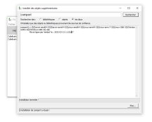
Patcher pour le traitement de l'OSC SLIP directement dans Pure Data
Relais OSC SLIP ⇄ OSC UDP avec Pure Data
Cette section propose une solution pour connecter une carte Arduino qui communique en SLIP avec n'importe quelle application qui communique en OSC UDP.

Prérequis
Cette solution nécessite l'installation de Pure Data et d'y ajouter des objets pour l'OSC SLIP : voir la section OSC SLIP avec Pure Data.
Le patcher Pure Data

Relais OSC SLIP ⇄ MIDI avec Pure Data
Cette section propose une solution pour connecter une carte Arduino qui communique en SLIP avec n'importe quelle application MIDI.

Prérequis
Cette solution nécessite l'installation de Pure Data et d'y ajouter des objets pour l'OSC SLIP : voir la section OSC SLIP avec Pure Data.
Configuration MIDI de Pure Data


Patcher pour le relais de messages OSC SLIP <-> MIDI

Exemple d'envoi et de réception du MIDI dans VCV Rack

OSC SLIP avec Max
Installation de Max
Téléchargez la version appropriée pour votre système ici (si possible la version avec installateur) : cycling74.com/downloads
Installation des objets additionnels pour l'OSC SLIP dans Max
Pour faire fonctionner l'OSC SLIP il est nécessaire d'ajouter une collection d'objets à Max:
- CNMAT

Patcher pour le traitement de l'OSC SLIP directement dans Max

OSC SLIP Web
Configuration Arrduino
Téléversez le code MicroOscSlip_demo sur votre Arduino et réalisez le circuit tel qu'indiqué à la page OSC SLIP avec MicroOsc
Installation de Node.js

Téléchargement du code slipWebDemo.zip


Configuration et démarrage de «slipWebDemo


OSC avec VCV Rack
Il existe quelques modules OSC pour VCV Rack, mais nous trouvons que le module cvOSCcv est le plus configurable.
Installation de cvOSCcv
En date du 4 octobre 2022, le module cvOSCcv n'est plus disponible dans le gestionnaire de librairies de VCV Rack.
Heureusement, l'adaption pour la version 2 est mode béta sur le GitHub de cvOSCcv. Ouvrez la section Assets de la dernière version (release) et téléchargez la version pour votre OS.

Pour installer cvOSCcv, copiez le dossier trowaSoft dans le dossier plugins des documents de VCV Rack 2 (Vos Documents > Rack2 > plugins).

Redémarrez VCV Rack et vous devriez trouver cvOSCcv dans la liste des modules:

Configuration de cvOSCcv


Sortie analogique (PWM: modulation de largeur d'impulsion)
Un sortie analogique permet de simuler une variation de tension électrique. Par exemple, un sortie analogique peut être utilisée pour faire varier la luminosité d'une DEL et effectuer des effets de fondu.
Pour simuler cette variation de tension, nous utilisons la modulation de largeur d'impulsion, Pulse Width Modulation (PWM) en anglais. Il s'agit de faire alterner à grande fréquence les périodes hautes (allumée) et basses (éteinte) de la broche. En d'autre termes, cela signifie que la DEL clignote très très vite. Tellement vite que l'oeil ne percevra qu'une lumière continue qui varie d'intensité.

Pour effectuer une sortie analogique, nous utilisons la paire de fonctions suivantes :
- Configurer la broche
maBrochePWMen mode sortie avecOUTPUT:
pinMode( maBrochePWM , OUTPUT );
- Contrôler la modulation de largeur d'impulsion, qui est entre 0 et 255, de la broche
maBrochePWMavecanalogWrite():
int maValeurPWM = 255; // VALEUR ENTRE 0 et 255
analogWrite( maBrochePWM, maValeurPWM );
Broches
Les broches capables de supporter modulation de largeur d'impulsions sont identifiées par un «~» ou le mot «PWM». Il s'agit des broches 3, 5, 6, 9, 10 et 11 pour l'Arduino Nano.

Debogage d'une sortie analogique

Le code suivant permet de déboguer la sortie nummérique à l'aide d'une DEL branchée à la broche 9. À chaque 30 millisecondes, la largeur d'impulsion est augmentée de 5. Lorsque la valeur dépasse 255, elle retombe à 0.
int maBrochePWM = 9;
int maValeurPWM = 0;
unsigned long monChrono;
void setup() {
Serial.begin(115200);
pinMode( maBrochePWM , OUTPUT);
}
void loop() {
if ( millis() - monChrono >= 30 ) {
monChrono = millis();
maValeurPWM = maValeurPWM + 5;
if ( maValeurPWM > 255 ) maValeurPWM = 0;
analogWrite( maBrochePWM , maValeurPWM );
Serial.print("analogWrite(");
Serial.print(maBrochePWM);
Serial.print(",");
Serial.print(maValeurPWM);
Serial.print(")");
Serial.println();
}
}
Chandelle
Dans cet exemple, nous simulons une chandelle en faisant varier aléatoirement l'intensité d'une DEL.
Aléatoire
La fonction random() permet de générer un entier int entre un minimum et un maximum. Il est très important de remarquer que que la valeur maximale est exclue des valeurs possibles; si le miminum est 0 et le maximum est 5, les valeurs possibles sont 0,1,2,3,4 (sans le 5).
Exemple d'utilisation de random():
int monMin = 0;
int monMax = 255;
int maValeurAleatoire = random( monMin , monMax );
Circuit
Composants
- Un Arduino avec une sortie analogique
- Une DEL
- Une résistance pour limiter l'intensité du courant qui traverse la DEL
Notes
- La DEL doit être connectée à une sortie analogique de l'Arduino
Schéma

Code
int maBrocheDel = 9;
unsigned long monChrono;
void setup() {
pinMode(maBrocheDel, OUTPUT);
}
void loop() {
if ( millis() - monChrono >= 20 ) {
monChrono = millis();
int monMin = 0;
int monMax = 256;
int maValeurAleatoire = random( monMin , monMax );
analogWrite(maBrocheDel, maValeurAleatoire);
}
}
Bande de DEL
Préparation
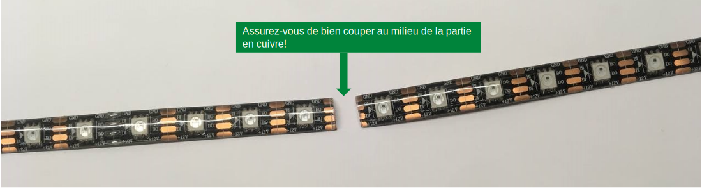

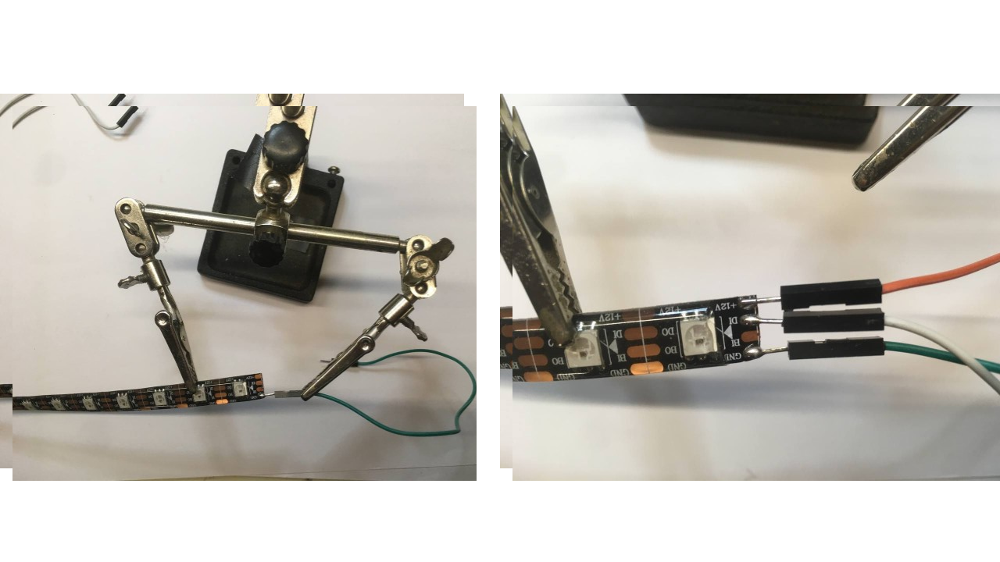
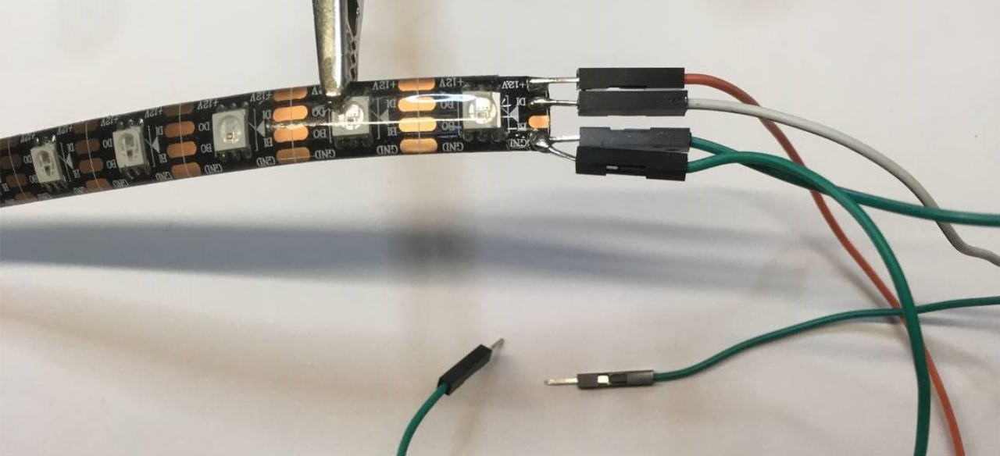
Broches
Le modèle de bande de DEL que nous utilisons est le WS281X (le X indique que le dernier chiffre n’est pas important). Elle fonctionne avec une tension d'alimentation à 12V.
Elle est aussi connue sous le nom de NeoPixel, parce qu’elle a été popularisé en Amérique par la compagnie Adafruit qui la baptisé ainsi. Adafruit fournit plusieurs modèles de NeoPixel. Cependant, les NeoPixels fonctionnent à 5V. Toutefois le système de contrôle est identique à celui de la bande de DEL que nous utilisons.
Les NeoPixels possèdent 3 broches qui doivent toutes être connectées :
- GND
- Alimentation (5V, 12V ou 24V selon les modèles)
- Entrée de données (Data In)
Les WS281X 12V possèdent 4 broches (la broche supplémentaire est optionnelle) :
- GND
- +12V pour l'alimentation
- DI pour l'entrée de données
- BI qui est optionnel et utilisé seulement en cas de bris d'un segment
Ordre des couleurs des DEL
Pour chaque modèle de bande de DEL, les couleurs sont disposées dans un certain ordre: RGB, GRB, BGR, etc. Dans notre cas, l'ordre est : RGB
Branchement
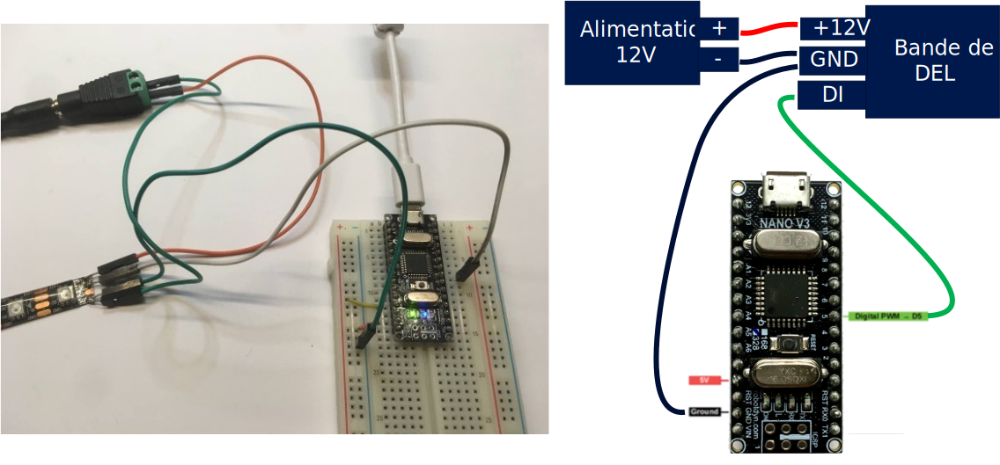
Bonnes pratiques
Adafruit recommande les bonnes pratiques de connexion suivantes : Best Practices | Adafruit NeoPixel Überguide | Adafruit Learning System
Bibliothèques
Les bibliothèques de DEL supportent souvent plusieurs modèles. Assurez-vous que vous sélectionnez le bon modèle dans le code!
Les deux bibliothèques les plus populaires sont:
- Adafruit NeoPixel : NeoPixel est plus simple à utiliser mais moins performante.
- FastLED : FastLED est plus performante, mais plus compliquée à utiliser. Cette bibliothèque présente aussi les meilleurs exemples.
Bibliothèque FastLED

Exemples intéressants à essayer:
- Cylon
- TwinkleFox
- Fire2021
- DemoReel100
Dans chaque exemple, vous devez vous assurer que la configuration est adéquate :
- Que le DATA_PIN ou LED_PIN corresponde à la broche Arduino qui est connectée à la broche DI de la bande.
- Que NUM_LEDS corresponde au nombre de DEL de votre bande
- Que COLOR_ORDER corresponde à l’ordre des couleurs RGB
Pong 1D (Pong à une dimension)
Qu'est-ce que Pong (2D)?
- Data Driven Gamer: Pong (Atari, 1972 arcade, 60fps) - YouTube
- Atari Pong Table Electromechanical Game Debut @ IAAPA 2017 (Calinfer / UNIS) - YouTube
- Let's Play - The PainStation - YouTube
Exemple de jeu de Pong 1D
Ce projet est basé sur DIY Arduino 1D Pong Game with WS2812 LED Strip. Le code original a été écrit par B.Stultiens en 2015. La version présentée ici a été légèrement modifiée pour en régler un bogue et pour en retirrer le code audio.
Le projet nécessite:
- 1 bande de DEL d'au moins 32 pixels
- la bibliothèque NeoPixel pour contrôler la bande de DEL
- 2 interrupteurs pour démarrer et frapper la balle
- Optionnel: 2 autres interrupteurs peuvent être ajoutés pour permettre l'activation des bonus de jeu
Une simulation peut être testée en ligne ici : https://pi-pico.preview.wokwi.com/arduino/projects/345886566467502674
Installation de la bibliothèque Adafruit NeoPixel

Le circuit

Le code
N'oubliez pas de modifier la configuration matérielle pour qu'elle corresponde à votre circuit:
- PIN_WSDATA: Le numéro de la broche Arduino reliée à la broche DI de la bande de DEL
- NPIXELS: Le nombre de pixels dans botre bande de DEL
- PIN_BUT_RS: Le numéro de la broche Arduino reliée au bouton de droite
- PIN_BUT_LS: Le numéro de la broche Arduino reliée au bouton de gauche
- ZONE_SIZE: La taille des buts
- TIME_SPEED_MIN: La vitesse de la balle
/*
Arduino 1D Pong Game with (60) WS2812B LEDs
Copyright (C) 2015 B.Stultiens (modified by Thomas O Fredericks in 2022)
This program is free software: you can redistribute it and/or modify
it under the terms of the GNU General Public License as published by
the Free Software Foundation, either version 3 of the License, or
(at your option) any later version.
This program is distributed in the hope sthat it will be useful,
but WITHOUT ANY WARRANTY; without even the implied warranty of
MERCHANTABILITY or FITNESS FOR A PARTICULAR PURPOSE. See the
GNU General Public License for more details.
You should have received a copy of the GNU General Public License
along with this program. If not, see <http://www.gnu.org/licenses/>.
*/
#include "Adafruit_NeoPixel.h"
// HARDWARE CONFIGURATION
#define PIN_WSDATA 10 // LED strip data in pin
#define NPIXELS 64 // Number of pixels to handle
#define PIN_BUT_RS 3 // Right start/hit button pin
#define PIN_BUT_LS 2 // Left start/hit button pin
#define PIN_BUT_RP 4 // Optionnal right power-up button
#define PIN_BUT_LP 6 // Optionnal left power-up button
// BALL SPEED
#define TIME_SPEED_MIN 10
// ZONE AND WIN CONFIGURATION
#define ZONE_SIZE 7 // Bounce-back zone size
#define WIN_POINTS 10 // Points needed to win
#define SHOW_LO 12 // Score dots intensity background
#define SHOW_HI 48 // Score dots intensity foreground
#define NELEM(x) (sizeof(x) / sizeof((x)[0]))
Adafruit_NeoPixel one_d = Adafruit_NeoPixel(NPIXELS, PIN_WSDATA, NEO_GRB | NEO_KHZ800);
// Events from buttons and timers
#define EV_BUT_LS_PRESS 0x01
#define EV_BUT_RS_PRESS 0x02
#define EV_BUT_LP_PRESS 0x04
#define EV_BUT_RP_PRESS 0x08
#define EV_TIMER 0x10
#define EV_TIMEOUT 0x20
#define TIME_DEBOUNCE 8
#define TIME_IDLE 40
#define TIME_START_TIMEOUT 20000 // Go idle if nothing happens
#define TIME_RESUME_TIMEOUT 7500 // Auto-fire after timeout
#define TIME_BALL_BLINK 150
#define TIME_SPEED_INTERVAL 3
#define TIME_POINT_BLINK 233
#define TIME_WIN_BLINK 85
#define TIME_LOCKOUT 250 // Prevent fast button-press to max. 4 times/s
enum {
ST_IDLE = 0,
ST_START_L,
ST_START_R,
ST_MOVE_LR,
ST_MOVE_RL,
ST_ZONE_L,
ST_ZONE_R,
ST_POINT_L,
ST_POINT_R,
ST_RESUME_L,
ST_RESUME_R,
ST_WIN_L,
ST_WIN_R,
};
static uint32_t oldtime; // Previous' loop millis() value
static uint8_t thestate; // Game state
static uint8_t bstate_ls; // Button states
static uint8_t bstate_rs;
static uint8_t bstate_lp;
static uint8_t bstate_rp;
static uint8_t debtmr_ls; // Button debounce timers
static uint8_t debtmr_rs;
static uint8_t debtmr_lp;
static uint8_t debtmr_rp;
static uint16_t timer; // General timer
static uint16_t timeout; // Timeout timer (auto-start and goto idle)
static uint16_t lockout_l; // Lockout timer to prevent pushing too often
static uint16_t lockout_r;
static uint8_t ballblinkstate; // Blinking ball at edge on/off
static uint8_t pointblinkcount; // Blinking point when a side scores
static uint8_t ballpos; // Current position of the ball
static uint16_t speed; // Time between ball moves
static uint8_t speedup; // Faster and faster replies counter
static uint8_t points_l; // Score
static uint8_t points_r;
static uint8_t zone_l; // Hit back zone
static uint8_t zone_r;
static uint8_t boost_l; // Set if user boosted speed last round
static uint8_t boost_r;
static uint8_t boosted; // Set if any user boosted until the ball reaches opposite side
static uint8_t tuneidx; // Index to the running tune
/*
Return the current state of a button.
Returns non-zero on button pressed.
*/
static inline uint8_t button_is_down(uint8_t pin)
{
switch (pin) {
case PIN_BUT_LS: return !debtmr_ls && !bstate_ls;
case PIN_BUT_RS: return !debtmr_rs && !bstate_rs;
case PIN_BUT_LP: return !debtmr_lp && !bstate_lp;
case PIN_BUT_RP: return !debtmr_rp && !bstate_rp;
}
return 0;
}
/*
Debounce a button and return an event at the rising edge of the detection.
The rising edge ensures that there is no delay from pressing the button and
the event propagating. It is a prerequisite that the input line is not
glitchy.
A release event may be generated if the routine is slightly modified.
*/
static inline uint8_t do_debounce(uint8_t tdiff, uint8_t *bstate, uint8_t *debtmr, uint8_t pin, uint8_t ev)
{
if (0 == *debtmr) {
uint8_t state = digitalRead(pin);
if (state != *bstate) {
*debtmr = TIME_DEBOUNCE;
if (!(*bstate = state))
return ev; // Event on High-to-Low transition of input
// else
// return release_event_value
}
} else {
if (*debtmr >= tdiff)
*debtmr -= tdiff;
else
*debtmr = 0;
}
return 0;
}
/*
Timer countdown and return an event on timer reaching zero.
*/
static inline uint8_t do_timer(uint8_t tdiff, uint16_t *tmr, uint8_t ev)
{
if (0 != *tmr) {
if (*tmr >= tdiff)
*tmr -= tdiff; // Timer countdown
else
*tmr = 0;
// Set event when done counting
if (0 == *tmr)
return ev;
}
return 0;
}
/*
Draw the left and right zones where the ball may be hit back.
*/
static void draw_sides()
{
for (uint8_t i = 0; i < zone_l - 1; i++) {
one_d.setPixelColor(i, 0, 64, 64);
}
one_d.setPixelColor(0, 0, 64, 64);
for (uint8_t i = 0; i < zone_r - 1; i++) {
one_d.setPixelColor(NPIXELS - 1 - i, 0, 64, 64);
}
one_d.setPixelColor(NPIXELS - 1, 0, 64, 64);
}
/*
Draw the ball with a tail of five pixels in diminishing intensity.
*/
static void draw_ball(int8_t dir, uint8_t pos)
{
uint8_t c = 255;
for (uint8_t i = 0; i < 5 && pos >= 0 && pos < NPIXELS; i++) {
one_d.setPixelColor(pos, c, c, 0);
c >>= 1;
pos -= dir;
}
}
/*
Draw the playing field consisting of the zones and the points scored so far.
*/
static void draw_course(uint8_t v)
{
one_d.clear();
draw_sides();
if (v) {
for (uint8_t i = 0; i < points_l; i++) {
one_d.setPixelColor(NPIXELS / 2 - 1 - (2 * i + 0), v, 0, 0);
one_d.setPixelColor(NPIXELS / 2 - 1 - (2 * i + 1), v, 0, 0);
}
for (uint8_t i = 0; i < points_r; i++) {
one_d.setPixelColor(NPIXELS / 2 + (2 * i + 0), 0, v, 0);
one_d.setPixelColor(NPIXELS / 2 + (2 * i + 1), 0, v, 0);
}
}
}
/*
Animate the game idle situation with following content:
- A rainbow pattern
- Ball bouncing left-right-left-right
- Score animation
*/
static uint16_t ai_h;
static uint8_t ai_state;
static uint8_t ai_pos;
static void animate_idle_init(void)
{
ai_h = 0;
ai_state = 0;
}
#define H_STEPS 1542
static void animate_idle(void)
{
switch (ai_state) {
case 0:
case 1:
case 2:
case 3:
/* Rainbow pattern */
for (uint8_t i = 0; i < NPIXELS; i++) {
uint16_t h = ai_h + (i << 4);
if (h >= H_STEPS)
h -= H_STEPS;
uint32_t rgbcolor = one_d.ColorHSV(h, 255, 128);
one_d.setPixelColor(i, rgbcolor);
}
ai_h += H_STEPS / 60;
if (ai_h >= H_STEPS) {
ai_h -= H_STEPS;
ai_pos = 0;
ai_state++;
}
break;
case 4:
case 6:
/* Ball left-to-right */
draw_course(0);
draw_ball(1, ai_pos++);
if (ai_pos >= NPIXELS) {
ai_state++;
}
break;
case 5:
case 7:
/* Ball right-to-left */
draw_course(0);
draw_ball(-1, --ai_pos);
if (!ai_pos) {
ai_state++;
}
break;
case 8:
case 10:
/* Score blinkenlights */
draw_course(0);
for (uint8_t i = 0; i < ai_pos; i++) {
one_d.setPixelColor(NPIXELS / 2 - 1 - i, 255, 0, 0);
one_d.setPixelColor(NPIXELS / 2 + i, 0, 255, 0);
}
if (++ai_pos >= NPIXELS / 2) {
ai_state++;
ai_pos = 0;
}
break;
case 9:
case 11:
draw_course(0);
for (uint8_t i = 0; i < NPIXELS / 2 - ai_pos; i++) {
one_d.setPixelColor(NPIXELS / 2 - 1 - i, 255, 0, 0);
one_d.setPixelColor(NPIXELS / 2 + i, 0, 255, 0);
}
if (++ai_pos >= NPIXELS / 2) {
ai_state++;
ai_pos = 0;
}
break;
default:
ai_state = 0;
break;
}
one_d.show();
}
/*
Animate a winner. Flash the winning side's points.
*/
static uint8_t aw_state;
static void animate_win_init()
{
aw_state = 0;
}
static uint8_t animate_win(uint8_t side)
{
uint32_t clr;
uint8_t pos;
if (side) {
clr = Adafruit_NeoPixel::Color(0, 255, 0);
pos = NPIXELS / 2;
} else {
clr = Adafruit_NeoPixel::Color(255, 0, 0);
pos = 0;
}
one_d.clear();
if (aw_state < 20) {
if (aw_state & 0x01) {
for (uint8_t i = 0; i < NPIXELS / 2; i++) {
one_d.setPixelColor(pos + i, clr);
}
}
} else if (aw_state < 50) {
for (uint8_t i = 0; i < aw_state - 20; i++) {
one_d.setPixelColor(pos + i, clr);
}
} else if (aw_state < 80) {
for (uint8_t i = aw_state - 50; i < NPIXELS / 2; i++) {
one_d.setPixelColor(pos + i, clr);
}
} else if (aw_state < 110) {
for (uint8_t i = 0; i < aw_state - 80; i++) {
one_d.setPixelColor(NPIXELS / 2 - 1 - i + pos, clr);
}
} else if (aw_state < 140) {
for (uint8_t i = aw_state - 110; i < NPIXELS / 2; i++) {
one_d.setPixelColor(NPIXELS / 2 - 1 - i + pos, clr);
}
}
one_d.show();
return ++aw_state < 140;
}
/*
Active game states suppress fast button pushes
*/
static uint8_t is_game_state(uint8_t s)
{
switch (s) {
case ST_MOVE_LR: // If you press too soon
case ST_MOVE_RL:
case ST_ZONE_R: // In the zone
case ST_ZONE_L:
case ST_POINT_L: // Just got a point, delay resume
case ST_POINT_R:
case ST_WIN_R: // Delay to activate the win sequence
case ST_WIN_L:
return 1;
default:
return 0;
}
}
/*
Set the timer to the speed of the ball and the current boost-state
*/
static inline void speed_to_timer()
{
if (boosted)
timer = speed * 3 / 4;
else
timer = speed;
if (timer < 2)
timer = 2;
}
/*
State transition routine. Setup prerequisites for the new state to function
properly.
- Handle a state's exit actions
- Handle a state's entry actions
*/
static void set_state(uint8_t newstate)
{
/* State exit actions */
switch (thestate) {
case ST_IDLE:
case ST_WIN_L:
case ST_WIN_R:
points_l = points_r = 0;
boost_l = boost_r = 0;
zone_l = zone_r = ZONE_SIZE;
speedup = 0;
boosted = 0;
break;
case ST_START_L:
case ST_POINT_L:
case ST_RESUME_L:
ballpos = 0;
/* Serve speed not too fast */
speed = TIME_SPEED_MIN + 5 * TIME_SPEED_INTERVAL;
speedup = 0;
break;
case ST_START_R:
case ST_POINT_R:
case ST_RESUME_R:
ballpos = NPIXELS - 1;
/* Serve speed not too fast */
speed = TIME_SPEED_MIN + 5 * TIME_SPEED_INTERVAL;
speedup = 0;
break;
case ST_ZONE_L:
/* Calculate the speed for the return */
speed = TIME_SPEED_MIN + TIME_SPEED_INTERVAL * ballpos;
if (++speedup / 2 >= speed)
speed = 2;
else
speed -= speedup / 2;
boosted = 0;
break;
case ST_ZONE_R:
/* Calculate the speed for the return */
speed = TIME_SPEED_MIN + TIME_SPEED_INTERVAL * (NPIXELS - 1 - ballpos);
if (++speedup / 2 >= speed)
speed = 2;
else
speed -= speedup / 2;
boosted = 0;
break;
}
thestate = newstate;
/* State entry actions */
switch (thestate) {
case ST_IDLE:
boost_l = boost_r = 0;
zone_l = zone_r = ZONE_SIZE;
animate_idle_init();
timer = TIME_IDLE;
break;
case ST_START_L:
case ST_START_R:
draw_course(SHOW_HI);
one_d.show();
timer = TIME_BALL_BLINK;
timeout = TIME_START_TIMEOUT;
ballblinkstate = 0;
ballpos = thestate == ST_START_L ? 0 : NPIXELS - 1;
break;
case ST_MOVE_LR:
case ST_MOVE_RL:
speed_to_timer();
break;
case ST_POINT_L:
case ST_POINT_R:
pointblinkcount = 7;
/* Recover the zone next round */
if (!boost_l && zone_l < ZONE_SIZE)
zone_l++;
if (!boost_r && zone_r < ZONE_SIZE)
zone_r++;
timer = TIME_POINT_BLINK;
if (boost_l)
boost_l--;
if (boost_r)
boost_r--;
// Ensure we get to the score display before continuing
lockout_l = lockout_r = TIME_LOCKOUT;
break;
case ST_RESUME_L:
case ST_RESUME_R:
draw_course(SHOW_HI);
one_d.show();
timer = TIME_BALL_BLINK;
timeout = TIME_RESUME_TIMEOUT;
ballblinkstate = 0;
break;
case ST_WIN_L:
case ST_WIN_R:
// Ensure we get to the winner display before continuing
lockout_l = lockout_r = 2 * TIME_LOCKOUT;
animate_win_init();
timer = TIME_WIN_BLINK;
tuneidx = 0;
break;
}
}
/*
Arduino setup
*/
void setup()
{
PORTB = PORTC = PORTD = 0xff; // Enable all pull-ups so we don't have undef inputs hanging
pinMode(PIN_BUT_LS, INPUT_PULLUP);
pinMode(PIN_BUT_RS, INPUT_PULLUP);
pinMode(PIN_BUT_LP, INPUT_PULLUP);
pinMode(PIN_BUT_RP, INPUT_PULLUP);
one_d.begin(); // Setup IO
one_d.show(); // All leds off
thestate = ST_IDLE;
set_state(ST_IDLE); // To run both exit and entry actions
/*
Setup sound hardware with Timer1 manually. The disabled interrupts
in the pixel-update causes interference in the timing resulting in
clicks in the sound output.
*/
TCCR1A = 0;
TCCR1B = _BV(WGM12) | _BV(CS10);
OCR1A = 13; // Just a value
TCNT1 = 0;
}
/*
Main program, called constantly and forever.
- Handle timing and generate events
- Run the game's state machine
*/
#define chk_ev(ev) (events & (ev))
void loop()
{
uint32_t now;
uint8_t tdiff = (now = millis()) - oldtime;
uint8_t events = 0;
/* Handle buttons and timers on (just about) every millisecond */
if (tdiff) {
oldtime = now;
events |= do_debounce(tdiff, &bstate_ls, &debtmr_ls, PIN_BUT_LS, EV_BUT_LS_PRESS);
events |= do_debounce(tdiff, &bstate_rs, &debtmr_rs, PIN_BUT_RS, EV_BUT_RS_PRESS);
events |= do_debounce(tdiff, &bstate_lp, &debtmr_lp, PIN_BUT_LP, EV_BUT_LP_PRESS);
events |= do_debounce(tdiff, &bstate_rp, &debtmr_rp, PIN_BUT_RP, EV_BUT_RP_PRESS);
events |= do_timer(tdiff, &timer, EV_TIMER);
events |= do_timer(tdiff, &timeout, EV_TIMEOUT);
do_timer(tdiff, &lockout_l, 0);
do_timer(tdiff, &lockout_r, 0);
}
if (is_game_state(thestate)) {
// If the lockout timer is running, squash the button event
if (lockout_l)
events &= ~EV_BUT_LS_PRESS;
if (lockout_r)
events &= ~EV_BUT_RS_PRESS;
}
// A button press activates the lockout timer
if (chk_ev(EV_BUT_LS_PRESS))
lockout_l = TIME_LOCKOUT;
if (chk_ev(EV_BUT_RS_PRESS))
lockout_r = TIME_LOCKOUT;
switch (thestate) {
// Nothing to do
case ST_IDLE:
if (chk_ev(EV_BUT_LS_PRESS)) {
set_state(ST_START_L);
} else if (chk_ev(EV_BUT_RS_PRESS)) {
set_state(ST_START_R);
} else if (chk_ev(EV_TIMER)) {
timer = TIME_IDLE;
animate_idle();
}
break;
// Game is started, waiting for left player to serve the ball
case ST_START_L:
if (chk_ev(EV_BUT_LS_PRESS)) {
set_state(ST_MOVE_LR);
} else if (chk_ev(EV_TIMEOUT)) {
set_state(ST_IDLE);
} else if (chk_ev(EV_TIMER)) {
timer = TIME_BALL_BLINK;
if (ballblinkstate)
one_d.setPixelColor(ballpos, 255, 128, 0);
else
one_d.setPixelColor(ballpos, 0, 0, 0);
one_d.show();
ballblinkstate = !ballblinkstate;
}
break;
// Game is started, waiting for right player to serve the ball
case ST_START_R:
if (chk_ev(EV_BUT_RS_PRESS)) {
set_state(ST_MOVE_RL);
} else if (chk_ev(EV_TIMEOUT)) {
set_state(ST_IDLE);
} else if (chk_ev(EV_TIMER)) {
timer = TIME_BALL_BLINK;
if (ballblinkstate)
one_d.setPixelColor(ballpos, 255, 128, 0);
else
one_d.setPixelColor(ballpos, 0, 0, 0);
one_d.show();
ballblinkstate = !ballblinkstate;
}
break;
// Ball is moving left-to-right outside the playback zone
case ST_MOVE_LR:
if (chk_ev(EV_TIMER)) {
speed_to_timer();
draw_course(SHOW_LO);
draw_ball(1, ballpos);
one_d.show();
ballpos++;
if (NPIXELS - 1 - ballpos <= zone_r)
set_state(ST_ZONE_R);
}
break;
// Ball is moving right-to-left outside the playback zone
case ST_MOVE_RL:
if (chk_ev(EV_TIMER)) {
speed_to_timer();
draw_course(SHOW_LO);
draw_ball(-1, ballpos);
one_d.show();
ballpos--;
if (ballpos <= zone_l)
set_state(ST_ZONE_L);
}
break;
// Ball is in the left playback zone, waiting for hit/score
case ST_ZONE_L:
if (chk_ev(EV_BUT_LS_PRESS)) {
set_state(ST_MOVE_LR);
// Changing speed is done after the state-change's exit/entry action
if (zone_l > 1 && button_is_down(PIN_BUT_LP)) {
zone_l--;
boosted = 1;
speed_to_timer();
boost_l++;
}
} else if (chk_ev(EV_TIMER)) {
if (!ballpos) {
if (++points_r >= WIN_POINTS)
set_state(ST_WIN_R);
else
set_state(ST_POINT_R);
} else {
speed_to_timer();
ballpos--;
}
draw_course(SHOW_LO);
draw_ball(-1, ballpos);
one_d.show();
}
break;
// Ball is in the right playback zone, waiting for hit/score
case ST_ZONE_R:
if (chk_ev(EV_BUT_RS_PRESS)) {
set_state(ST_MOVE_RL);
// Changing speed is done after the state-change's exit/entry action
if (zone_r > 1 && button_is_down(PIN_BUT_RP)) {
zone_r--;
speed_to_timer();
boosted = 1;
boost_r++;
}
} else if (chk_ev(EV_TIMER)) {
if (ballpos == NPIXELS - 1) {
if (++points_l >= WIN_POINTS)
set_state(ST_WIN_L);
else
set_state(ST_POINT_L);
} else {
speed_to_timer();
ballpos++;
}
draw_course(SHOW_LO);
draw_ball(1, ballpos);
one_d.show();
}
break;
// Left player scored, animate point
case ST_POINT_L:
if (chk_ev(EV_BUT_LS_PRESS)) {
set_state(ST_RESUME_L);
} else if (chk_ev(EV_TIMER)) {
timer = TIME_POINT_BLINK;
draw_course(SHOW_HI);
if (!(pointblinkcount & 0x01)) {
one_d.setPixelColor(NPIXELS / 2 - 1 - (2 * (points_l - 1) + 0), 0, 0, 0);
one_d.setPixelColor(NPIXELS / 2 - 1 - (2 * (points_l - 1) + 1), 0, 0, 0);
} else {
one_d.setPixelColor(NPIXELS / 2 - 1 - (2 * (points_l - 1) + 0), 255, 0, 0);
one_d.setPixelColor(NPIXELS / 2 - 1 - (2 * (points_l - 1) + 1), 255, 0, 0);
}
one_d.show();
if (!--pointblinkcount)
set_state(ST_RESUME_L);
}
break;
// Right player scored, animate point
case ST_POINT_R:
if (chk_ev(EV_BUT_RS_PRESS)) {
set_state(ST_RESUME_R);
} else if (chk_ev(EV_TIMER)) {
timer = TIME_POINT_BLINK;
draw_course(SHOW_HI);
if (!(pointblinkcount & 0x01)) {
one_d.setPixelColor(NPIXELS / 2 + (2 * (points_r - 1) + 0), 0, 0, 0);
one_d.setPixelColor(NPIXELS / 2 + (2 * (points_r - 1) + 1), 0, 0, 0);
} else {
one_d.setPixelColor(NPIXELS / 2 + (2 * (points_r - 1) + 0), 0, 255, 0);
one_d.setPixelColor(NPIXELS / 2 + (2 * (points_r - 1) + 1), 0, 255, 0);
}
one_d.show();
if (!--pointblinkcount)
set_state(ST_RESUME_R);
}
break;
// Left player previously scored and must serve again (or timeout to auto-serve)
case ST_RESUME_L:
if (chk_ev(EV_BUT_LS_PRESS | EV_TIMEOUT)) {
set_state(ST_MOVE_LR);
} else if (chk_ev(EV_TIMER)) {
timer = TIME_BALL_BLINK;
if (ballblinkstate)
one_d.setPixelColor(ballpos, 255, 128, 0);
else
one_d.setPixelColor(ballpos, 0, 0, 0);
one_d.show();
ballblinkstate = !ballblinkstate;
}
break;
// Right player previously scored and must serve again (or timeout to auto-serve)
case ST_RESUME_R:
if (chk_ev(EV_BUT_RS_PRESS | EV_TIMEOUT)) {
set_state(ST_MOVE_RL);
} else if (chk_ev(EV_TIMER)) {
timer = TIME_BALL_BLINK;
if (ballblinkstate)
one_d.setPixelColor(ballpos, 255, 128, 0);
else
one_d.setPixelColor(ballpos, 0, 0, 0);
one_d.show();
ballblinkstate = !ballblinkstate;
}
break;
// A player won the game, animate the winning side
case ST_WIN_L:
case ST_WIN_R:
if (chk_ev(EV_BUT_LS_PRESS)) {
set_state(ST_START_L);
} else if (chk_ev(EV_BUT_RS_PRESS)) {
set_state(ST_START_R);
} else if (chk_ev(EV_TIMER)) {
timer = TIME_WIN_BLINK;
if (!animate_win(thestate == ST_WIN_R))
set_state(ST_IDLE);
}
break;
// If we get confused, start at idle...
default:
set_state(ST_IDLE);
break;
}
}